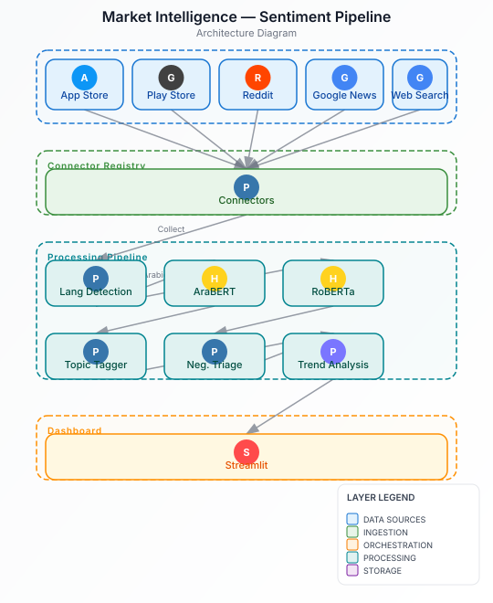

The Problem
Waffarha needed visibility into public sentiment across multiple platforms—App Store, Google Play, Reddit, Google News, and web search. Manual monitoring was impossible at scale, and existing solutions didn't handle Arabic text well. The team needed a systematic way to track brand perception, identify emerging issues, and understand customer pain points across different markets.
Architecture
Hover or tap any component to see details

Implementation
- Connector Registry: Designed a modular architecture where each data source requires only one connector file. No changes needed to ingestion, analysis, storage, or dashboard layers when adding new sources.
- Multilingual Processing: Routed Arabic mentions to AraBERT and English mentions to RoBERTa for sentiment analysis, handling Arabizi (Arabic in Latin script) with rule-based detection.
- Topic Tagging: Implemented a rule-based tagger across 6 business categories: app bugs, customer service, pricing, wallet security, offer accuracy, and delivery.
- Negative Triage: Built a feed that surfaces negative mentions for immediate attention, prioritized by sentiment score and recency.
- Visualization: Created Streamlit dashboards with sentiment trends over time, topic breakdowns, and interactive filters.
Business Categories Tracked
- App Bugs: Technical issues, crashes, performance problems
- Customer Service: Support quality, response times, agent behavior
- Pricing: Price changes, discounts, perceived value
- Wallet Security: Payment issues, fraud concerns, transaction problems
- Offer Accuracy: Coupon validity, deal terms, partner compliance
- Delivery: Shipping issues, partner fulfillment, tracking problems
Outcome
The pipeline provides Waffarha with continuous visibility into brand perception across markets. The modular architecture allows easy expansion to new sources, and the multilingual support ensures comprehensive coverage of Arabic and English conversations. The negative mention triage feed enables rapid response to emerging issues.